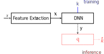
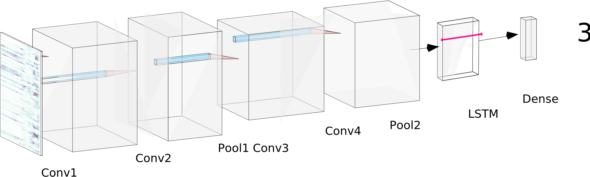
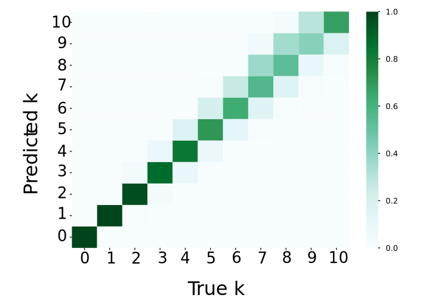
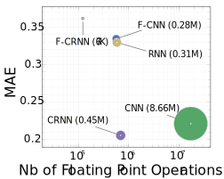

Separation and Count Estimation for Audio Sources Overlapping in Time and Frequency
PhD. Defense
Fabian-Robert Stöter
September 19th, 2019


How many speakers can you hear?
Example A
Example B
Can you hear out each instrument?
Example A
Example B
Overlap in Time and Frequency


The big picture

Signal Processing
- Can we obtain $\mathbf{s}_j$ from $\mathbf{x}$?
- Source Separation
Signal Analysis
- Can we find $k$ from $\mathbf{x}$?
- Count Estimation
Applications
Separation
- Active Listening
- Hearing Aids
- Frontend for many other signal processing methods
Count Estimation
- First step to address the separation
- Crowd Surveillance
- Wildlife Monitoring
Source Separation
Scenario: Instruments playing Unison
 Trumpet
Trumpet

Scenario: Instruments playing Unison
 Cello
Cello

Scenario: Instruments playing Unison
Cello

Scenario: Instruments playing Unison
Cello
Instruments playing Unison
Trumpet + Cello

Research Question
- Unison has extreme overlap
- Separation Sandbox
Can we utilize modulations for separation of unison mixtures?
Contributions
- Known/Informed Modulation
- Unknown Modulation
Known Modulation
Modeling Instationary Signals
- TF Classification
- Source/filter model
- Spectral Comb Filter
Proposed
- Use Time Warping
- Filter in time domain
- less artifacts
- required: accurate F0

MUSERC: MUlti SEnsor Recordings: Cello
Unknown Modulation
Modeling Instationary Signals
- HR-NMF
- Modulation Tensor
Proposed
- Novel Representation
- Suitable Separation Model

Common Fate: groups based on their common motion over time.
Common Fate: groups based on their common motion over time.
Common Fate Transform (CFT)
- CFT is computed using complex STFT
- Easily invertible
- Results is modulation texture
In Detail
Common Fate Model (CFM)
 $$\sum\limits_{j=1}^{J} \mathcal{A}_{j}(a,b,f) \circ \mathbf{h}_{j}(t)$$
$$\sum\limits_{j=1}^{J} \mathcal{A}_{j}(a,b,f) \circ \mathbf{h}_{j}(t)$$
- Based on Non-Negative Tensor Factorization
Demo: Sax + Flute
Demo: Viola + Flute
Extension music separation
- Common fate transform + Deep Neural Networks
- Model from Uhlich 2015
- Improvements compared to STFT
Extension for real world data
Results SiSEC 2016
Source Count Estimation
Strategies to Count


Research Questions
- What are the limitations of subitizing audio sources?
- Can we build a machine to solve this tasks?
- Would a machine be subject to the same limitations?
Study on Music
What is the number of instruments in music?
- 12 music stimuli
- Unison for $k=2$
- Musicians vs. Non-Musicians
- Web based experiment
- lab ($n=40$) vs web ($n=1168$)
🔈
🔊

Study on Speech
What is the number of concurrent speakers?
- 100 English stimuli (5s)
- n=40
- $k_{max}$: blind vs informed
- Confirm earlier study in japanese
- Experiment denumerate.app

Music and Speech: "One-Two-Three-Many"
Research Questions
- What are the limitations of subitizing audio sources?
- Can we build a machine to solve this tasks?
- Would a machine be subject to the same limitations?
Task definition
$k$ = Maximum number of concurrent speaker
Data-Driven Count Estimation

- Synthetically overlapped mixtures using LibriSpeech
-
20.020 training items (55h) ground truth labels
- 1820 samples for $[0 ... 10]$ speakers
- $k=0$ from TUT Acoustic Scenes dataset
Input and Output
Architectures
Architectures

CRNN
Model selection
CountNet = STFT > CRNN > Classification
Results on Test set
- Excellent voice activity detection
- Overestimation between $2 < k < 6$
- Error rarely larger than $k=2$

Complexity
- CRNN: Best Performance/Complexity
- F-CRNN: Suitable for mobile applications

Evaluation of CountNet
Train: LibriSpeech Test: LibriSpeech
- MEAN: $k=5$
- VQ: K-Means of ${MFCC}[7]$
- SVC: SVM Classification ${MFCC}_{20}$
- SVR: SVM Regression ${MFCC}_{20}$
- RNN: DNN Recurrent LSTM on STFT
- CRNN: DNN LSTM+CNN on STFT
Train: LibriSpeech Test: TIMIT
Train: LibriSpeech Test: THCS10 🇨🇳
Train: LibriSpeech Test: LibriSpeech +/- 6dB
Train: LibriSpeech Test: LibriSpeech Reverberated
Train: LibriSpeech Reverberated Test: LibriSpeech Reverberated
CountNet Demo
Research Questions
- What are the limitations of subitizing audio sources?
- Can we build a machine to solve this tasks?
- Would a machine be subject to the same limitations?
CountNet vs. Human
- Underestimation
- Overestimation
- One-Two-Three-Many
- One-...-$k_{max}$
Understanding CountNet
Convolutional Filters
Does CountNet understand phonemes?
Understanding CountNet
Ablation Study
- Using phonetic annotation in TIMIT dataset
- Measure speaking rate
- Syllables per second => Modulation of Speech
Understanding CountNet
- Retrained model on TIMIT
- Select k=6 items (balanced)
- Errors only
underestimation - Significant effect of speaking rate
- Speaking very slow may result in understimation
CountNet used speech modulations
Conclusion
- Focus on overlapping part instead of non-overlapping part
- Proposed methods for separating unison mixtures
- Extended Common Fate for the Music scenario
- Speaker count estimation using DL
- Listening tests showed performance better than human
- Modulations play an important role audio tasks
Outlook
- Paradigm shift for signal processing
- DNN models for
- Common fate representations
- Long term structure for slow modulations
- Research on count estimation
- Extrapolation
Further Contributions
Public Domain Data
- Unison Dataset
- Cello Dataset
- DSD100, MUSDB18 Dataset
Reproducibility
- commonfate
- musdb
- museval
Community
- SiSEC Organization 2016, 2018
- Interactive Evaluation


Fabian-Robert StöterPhD Defense
Separation and Count Estimation for Audio Sources Overlapping in Time and Frequency